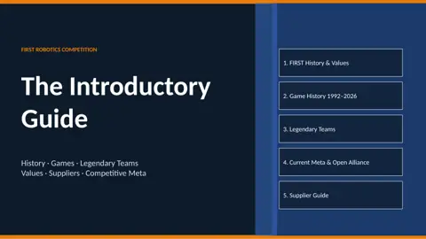
Slides · 38 slides
FRC Introductory Guide
FIRST history and core values, every FRC game from 1992 to 2026, legendary teams, suppliers, and the community tools and training resources worth knowing.
Slide decks, study sheets, games, and handouts I've made for teaching robotics and engineering.
3 slide decks · 8 study sheets · 5 games & quizzes · 4 handouts

Slides · 38 slides
FIRST history and core values, every FRC game from 1992 to 2026, legendary teams, suppliers, and the community tools and training resources worth knowing.
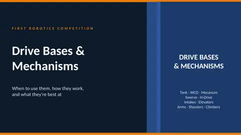
Slides · 16 slides
Tank, West Coast, mecanum, swerve, and H-drive compared, plus intakes, elevators, arms, shooters, and climbers.
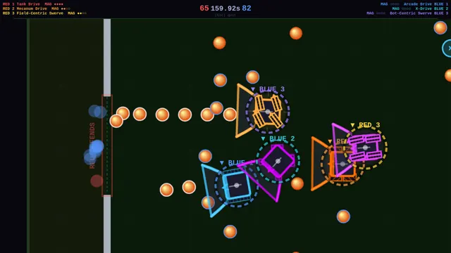
Game
Browser game where you drive every FRC drive type (tank, arcade, swerve, holonomic) head to head, with arcade modes and a story-driven career tutorial.
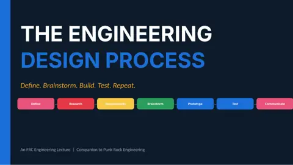
Slides · 12 slides
The seven-step engineering design process, its three iteration loops, and what each loop looks like on an FRC team. Steps adapted from Science Buddies.
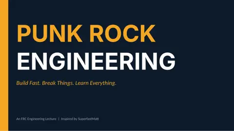
Slides · 13 slides
When to build fast and break things, and when to slow down and apply rigor. Inspired by SuperfastMatt.
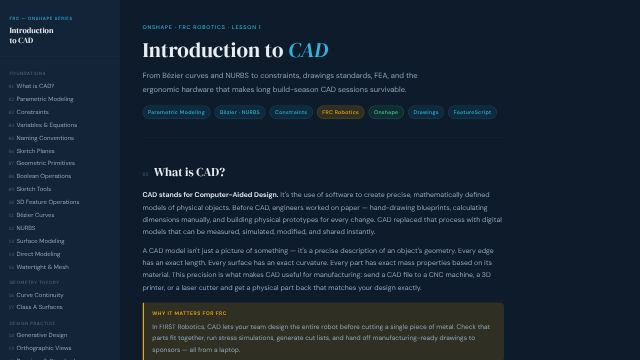
Study sheet + quiz
Parametric modeling, constraints, features, surfaces, drawings, BOMs, FEA, and the CAD software landscape, with a quiz at the end.
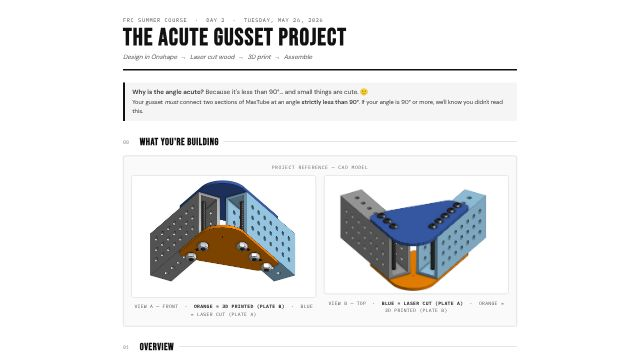
Project handout
Design one gusset in Onshape, then laser cut it in wood and 3D print it. Includes an Onshape checklist and the deliverables.
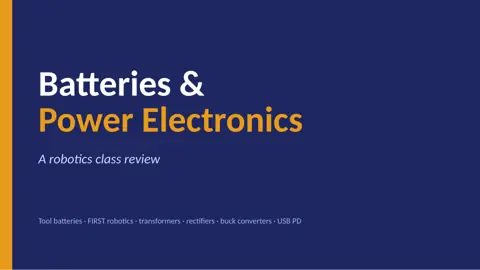
Slides · 22 slides
18650 cells, pack voltages, BMS, why FRC uses AGM lead-acid, transformers, rectifiers, buck converters, and USB PD.
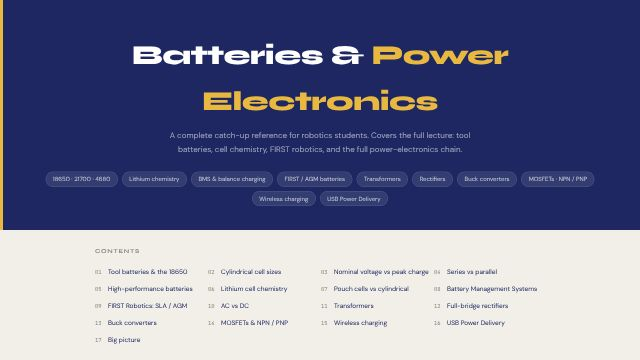
Study sheet
Companion to the Batteries & Power Electronics deck, with a diagram for every topic.
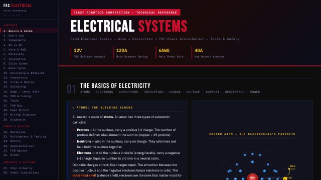
Study sheet
From atoms and Ohm's law to resistors, capacitors, inductors, flyback diodes, and transformers, with practical FRC examples.
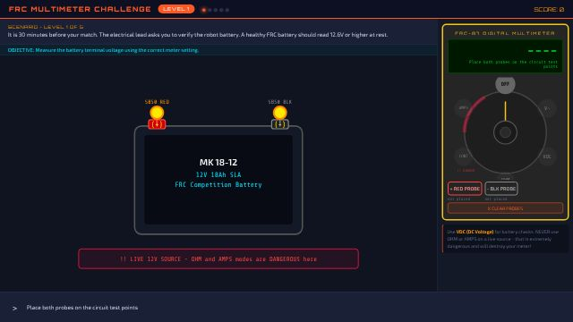
Game
Troubleshoot a robot with a virtual multimeter: find opens and shorts, check the battery, and pick the right meter mode before you fry it.
Game
Jeopardy-style review game on FRC electrical topics, built for a classroom projector.
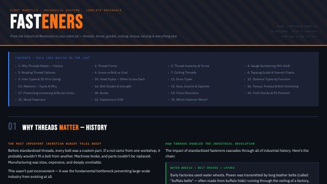
Study sheet
Threads and callouts, tapping and drill charts, head and drive types, grades, torque, loosening, rivets, and which fastener to use when.
Game
Jeopardy-style review game on tools, threads, and thread-locker, built for a classroom projector.
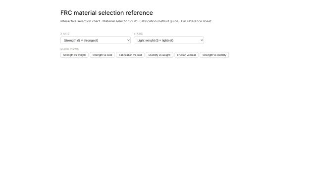
Interactive reference
38 materials compared for FRC use, with a material-selection quiz, a fabrication-method guide, and charts.
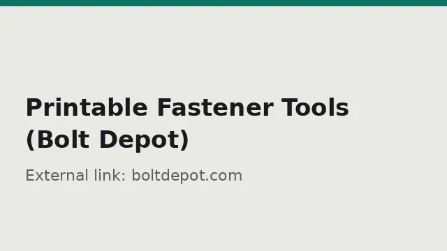
External chart
Bolt Depot's free printable bolt, nut, and thread gauges. Linked rather than rehosted because the charts are Bolt Depot's.
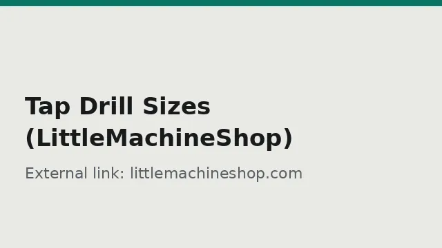
External chart
LittleMachineShop's tap drill chart for inch and metric threads. Linked rather than rehosted because the chart is theirs.
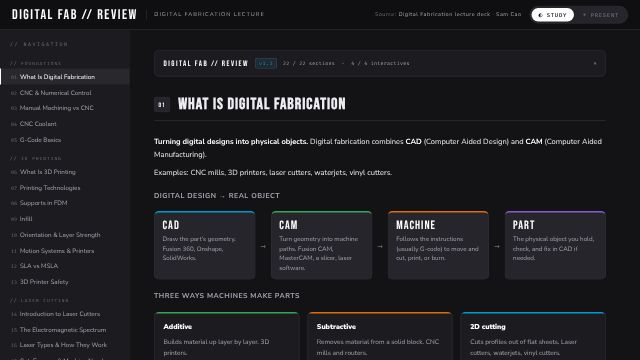
Interactive review
CNC and G-code, 3D printing, infill and layer strength, laser cutters and the EM spectrum, and color as bytes, with interactives and a review quiz.
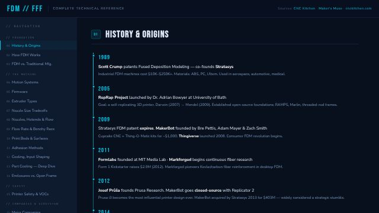
Study sheet
52-section deep dive on FDM printing: motion systems, extruders, nozzles, cooling, bed adhesion, safety, and a complete materials guide.
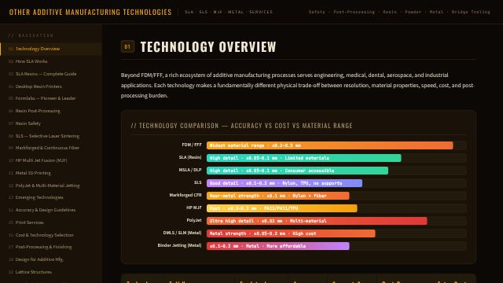
Study sheet
Resin (SLA and MSLA), SLS, HP MJF, Markforged fiber, metal printing, tolerances, print services, and design for additive manufacturing.
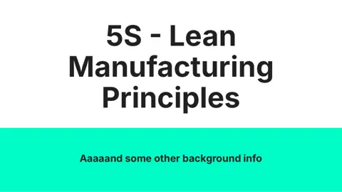
Slides · 14 slides
Kaizen, the five S's (plus safety), and PDCA, with shop-floor examples of each step.
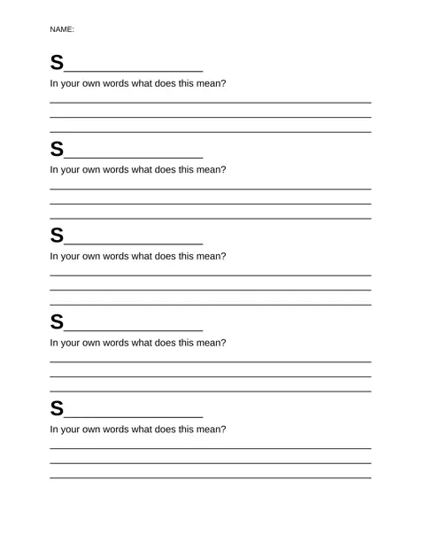
Slides · 28 slides
Choosing a path, what a real job hunt looks like, resumes, LinkedIn, interviews, and salary negotiation.
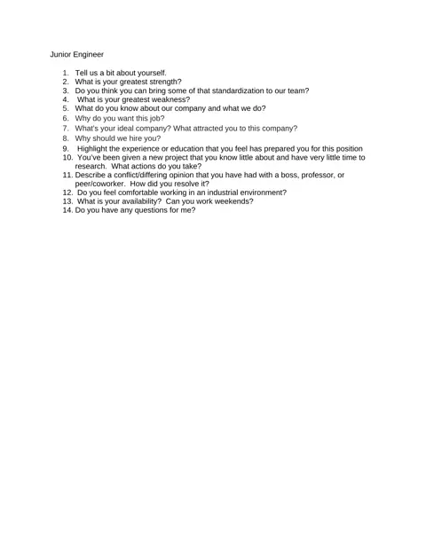
Handout · 8 pages
Interview questions for engineering roles from intern to quality manager, plus software, embedded, and problem-solving prompts.
Nothing matches that search.